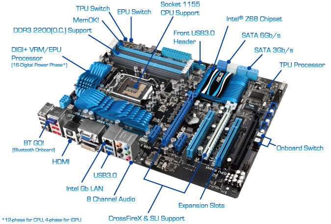

Identifikácia jednoduchých problémov spojených so zostavením PC
Diagnostikovanie možných hardvérových problémov
DxDiag.exeTento nástroj sa používa na zhromažďovanie informácií o zariadeniach, ktoré pomáhajú pri riešení problémov so zvukom a videom DirectX. O tieto informácie vás môže požiadať pracovník podpory, prípadne ich môžete uverejniť vo fóre pri hľadaní pomoci.
Vo Windowse vyberte tlačidlo Štart a zadajte výraz dxdiag do vyhľadávacieho poľa na paneli úloh. Z výsledkov vyberte položku dxdiag. V nástroji vyberte položku Uložiť všetky informácie na uloženie informácií vo formáte, ktorý sa jednoducho zdieľa.
Bežná údržbu PC
Aby počítač správne fungoval, nutne potrebuje túto údržb- Voľné miesto na disku C
- Vyčistenie disku P myšítkem na disk -> Vlastnosti -> Vyčištění disku
- Odinštalovanie nepotrebných programov
- Defragmentácia P myšítkem na disk -> Vlastnosti -> Nástroje -> Optimalizovat
- Kontrola chýb disku
- Antivirová ochrana
- Čistenie dočasných súborov prehliadača
Architektúra procesora
Procesor RISC, CISC
RISC - objavili sa so vznikom 32 bit procesorov, 4/5 programu tvoria jednoduché inštrukcie, jednoduchá architektúra, rýchly beh programu aj pri nižších tekt. frekv.CISC - prvé procesor, rozdiahla inštrukčná sada, pomalšie vykonávanie inštrukcií, zložitá architektúra
Prístup do pamäte DMA
Špeciálny typ prenosu, bez účasti mikroprocesora, kde špeciálny programovateľný obvod - kontrolér DMA preberá kontrolu nad riadením zberníc.Viacprocesorové systémy
Zbernice PC
Zbernica počítača - predstavuje sústavu vodičov, pomocou ktorých je nejaká jednotka spojená s procesorom, pamäťou a vstupno / výstupnými obvodmi. Je to akási dopravná infraštruktúra, pomocou ktorej sa dopravujú údaje medzi jednotlivými prvkami osobného počítača. Zbernica v sebe zahŕňa aj spôsob komunikácie, komunikačný protokol.Paralélne zbernice - umožňujú prenos viacerých bitov súčasne
Sériové zbernice - prenos sa uskutočňuje po jednotlivých bitoch
FSB zbernica - prostr. nej komunikuje mikroprocesor s čipsetom a ďalšími komponentmi - pamäť CACHE, RAM,...
Ďalsie typy tberníc - PCI, AGP, PCI-E, USB
Pamäťový systém PC
RAM - slúži na uchovávanie medzivýsledokv procesoraROM - určená len na čítanie, informácie sa ukladajú pri výrobe
CMOS pamäť - je typ pamäte v ktorej sú uložené základné informácie o konfigurácií PC (pocet pevných diskov, ich typ a veľkosť...)
Vyrovnávacie pamäte CACHE – používaná procesorom počítača na zníženie priemernej doby prístupu do hlavnej pamäte. Majú veľkosť od niekoľko kB do niekoľko MB. Slúži ako vyrovnávacia pamäť medzi rýchlym procesorom a pomalou hlavnou pamäťou
Vonkajšie pamäte HDD – slúžia na uloženie dát a programov, ktoré majú byť uchované aj po vypnutí počítača
CD/DVD - optická pamäť. Druhy CD-ROM - údaje sú uložene pri výrobe. CD-R - jednorázove napálenie. CD-RW - umožňuje opakované prepisovanie dát.
Blu-ray - vysokokapacitný optický disk určený primárne na ukladanie vide vo vysokom rozlíšení (25GB)
FLASH – nevolativný SSD dick, viac programovacích cyklov
Vlastnosti a funkcie Hardvéru
Procesor CPU
– Central Processing Unit– Základná jednotka pc, logický automat pre spracovanie informácii ( zložitý logický sekvenčný obvod )
– Procesor sa skladá z :
CPU = ALJ + RJ - RJ = riadiaca jednotka – riadi chod procesor
- ALJ = aritmeticko logicka jednotka – vykovana aritmeticke a log. Operáto

BIOS
- Basic Input Output System- Základný program, ktorý slúži na komunikáciu medzi hardvérom počítača a operačným systémom
- Spúšťa sa pri spustení počítača z pamäte na základnej doske
- Je umiestnený v pamäti na základnej doske a je mu odovzdané riadenie po štarte počítača.
Pamäte
– Pamäť slúži na uloženie (zaznamenanie) informácií a inštrukcií vstupujúcich do počítača, medzivýsledkov, výstupných údajov ale aj grafických informácií a obrazoviek.Podla energetickej zavislosti:
- Volatilne - pamäte, ktoré po odpojení stratia obsah
- Nevolatilne - obsah si uchovajú aj po odpojení napätia
- ROM – umožnuju iba čitanie, info sa vklada priamo pri vyrobe
- PROM – raz sa dajú naprogramovať pomocou špec. Programator. Softveru
- EPROM – viacnasobné programovanie
- EEPROM – programuju sa vdaka el. impulzom ; da sa aj pamat mazať ; špecialnym typom sú flash pamate – umožnuju viac program. cyklov
- Rwm RAM – volatil. Ram s lubovol. Pristupom
- Pamäte s paralelným prístupom - RAM pamäte
- Pamäte so seriovým prístupom SAM
- SRAM statická - Po zápise info ju uchová počas ľubovoľnej doby
- DRAM dynamická - pre udržanie info potrebujú pravidelné obnovenie
Pamät RAM
Random Access Memory - slúži procesoru na efektívnu prácu s dátami.-Jej kapacita určuje, aké množstvo programov môžete mať spustené naraz pri súčasnom plynulom chode operačného systému (počítača).
Pamäť ROM
- Read Only Memory- slúži na uchovávanie programov a dát, ktoré počas prevádzky počítača netreba meniť.
- sú nevolatilne
Matičná doska
- Motherboard- Je základ väčšiny počítačo
- Jej hlavným účelom je spojiť jednotlivé kusy hardwaru do 1 celku a poskytnúť im prísun napätia.
- Je umiestnený v pamäti na základnej doske a je mu odovzdané riadenie po štarte počítača.
-Northbridge ("Severný mostík„) zabezpečuje komunikáciu medzi CPU, RAM, PCI-Express a má na starosti spojenie s "južným mostíkom".
-Southbridge ("Južný mostík„) má na starosť obsluhu pomalších komponentov ako napr: klávesnica, pevné disky, myši

Rozhrania
- slúžia ku komunikácií vonkajších periférií ako sú myš, tlačiareň a pod. s mikroprocesorom-Seriové ak bity prúdia postupne jeden za druhým (COM1,COM2, FireWire, USB, SATA, ...)..
-Paralelné ak bity prúdia súčasne (LPT1, LPT2,ATA,..).
Magnetické pamäte
- sú to externé nevolatilné pamäte- Základné časti :
- Harmonický kryt
- Pohon disku
- Disky s mag. citlivou vrstvou
- Vystavovacia cievka
- Posuvné rameno
- Radič disku
CD disk
-Je optický digitálny údajový nosič informácii, optický disk so zápisom a čítaním údajov pomocou laserového lúča..-Kapacita týchto diskov je veľká: 650 MB až 700 MB.
-Kotúč s priemerom 12 cm, niekedy aj 8 cm.
DVD
-digitálny opticky dátovy nosič-Disky DVD majú rovnaké rozmery ako kompaktné disky CD, ale dokážu uložiť až šesťkrát viac dát.
Blue ray
-je disk na prehrávanie videa-je najkvalitnejším nosičom videa, ktorý pojme video v rozlíšeniach 4K a Ultra HD, a to vrátane 3D..
Monitor
-je displej slúžiaci na zobrazovanie textových a grafických informácií-je najkvalitnejším nosičom videa, ktorý pojme video v rozlíšeniach 4K a Ultra HD, a to vrátane 3D..
- Delenie monitorov
- CRT - je monitor ktorého zobrazovacím prvkom je obrazovka - Používajú rovnakú technológiu ako televízory - Výhodou je možnosť zmeny veľkosti bodu, cena, ... - Nevýhodou sú veľké rozmery, spotreba, hmotnosť, poškodzovanie zraku ....
- LCD -je monitor, ktorého zobrazovacím prvkom je displej z tekutých kryštálov.
- PLAZMA
- OLED
-Zobrazovacia časť LCD monitora je zložená z kvapalných kryštálov a ich ovládacích elektród na nosiči, polarizačných filtrov a zdroja svetla.
Grafická Karta
-špecifický typ hardwaru, ktorý sa stará o prevod signálu z PC do takej formy, aby ho bolo možne vidieť na zobrazovacom zariadení.- spolupracuje s procesorom a prevádza 2D a 3D výpočty..
- Grafické karty môžme rozdeliť na :
- Integrované GK so zdieľanou pamäťou
- Samostatné Grafické karty
- rýchlosť (bodová frekvencia/riadková a snímková frekvencia)
- rozlíšenie (počet zobrazených bodov v oboch smeroch)
- farebná hĺbka (počet zobraziteľných farieb, vyjadrené počtom bitov)
- veľkosť pamäte, jej typ a rýchlosť
- typ zbernice, prostredníctvom ktorej je karta pripojená do počítača (PCIe)
Zvuková karta
-časť počítača, ktorá zabezpečuje zvukový vstup a výstup.-Je kombináciou analógovo-digitálneho prevodníka, digitálno-analógového prevodníka, analógových obvodov
Ako zostaviť PC, video návod